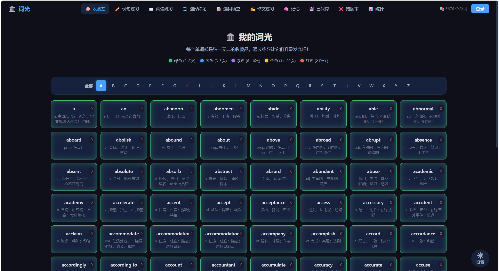
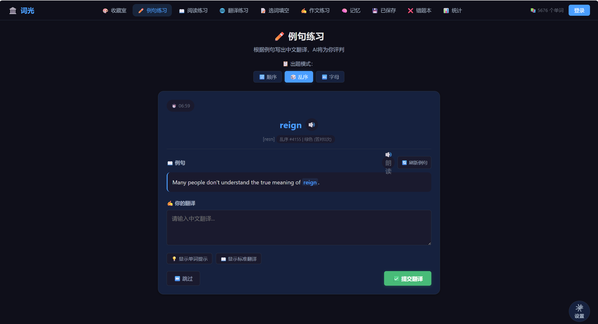
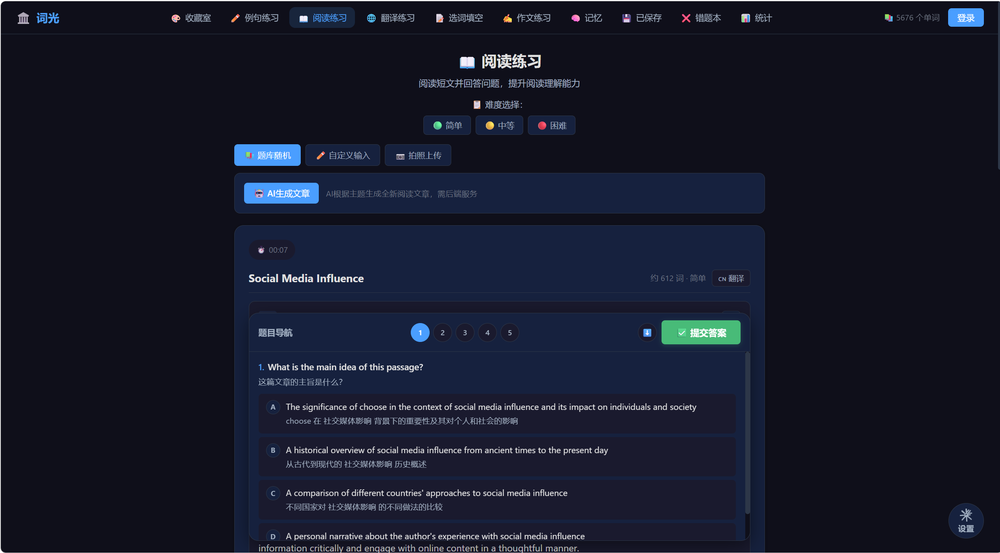
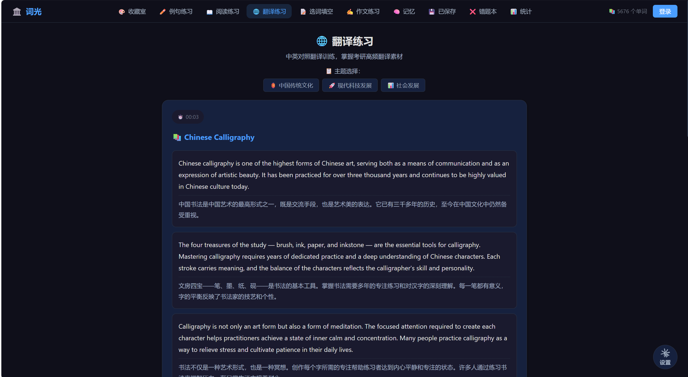
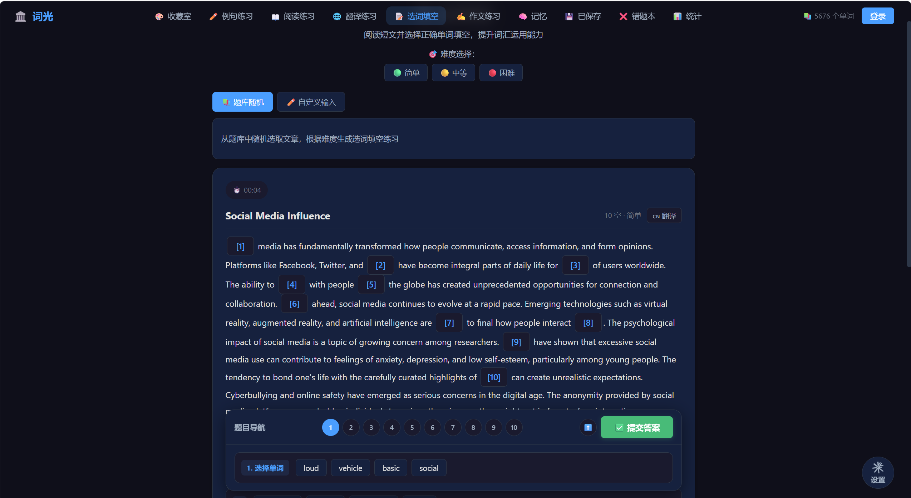
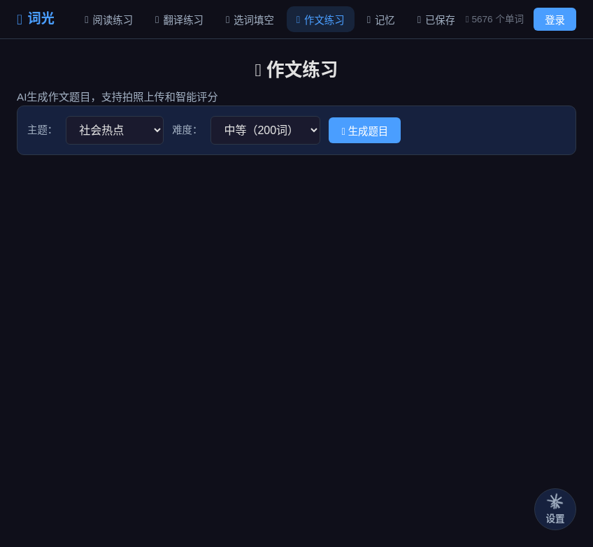
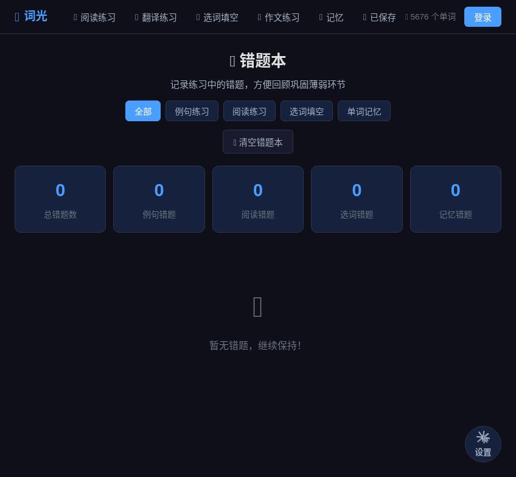
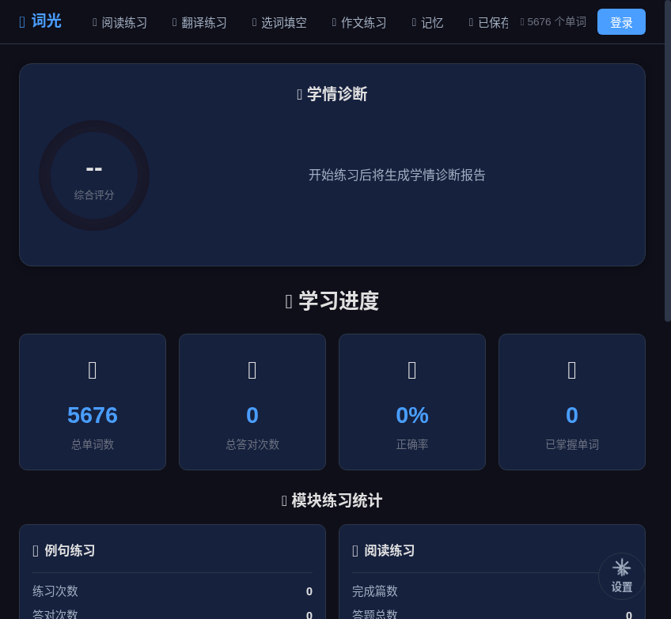

创意名称 + 创意介绍
词光 — AI 驱动的大学生英语学习助手
单词收藏室按照颜色等级直观展示你的背诵进度，一眼看出哪些单词掌握了、哪些还生疏。集成 AI 智能辅助，帮你理解阅读文章、分析错题原因、给作文打分测评。支持用户自定义练习主题，也能拍照上传自己做过的卷子直接开练。

想解决什么问题
大学生备考四六级时，最大的困扰是不知道自己到底掌握了多少。市面上的背单词软件只能告诉你今天背了几个，却无法让你快速回顾每个单词的练习次数和掌握程度。做阅读理解和作文练习时，题目都是固定的，用户无法针对薄弱的专题反复训练。作文写完之后没有老师批改，不知道哪里好哪里差，找不到提升方向。
为什么会想到做这个
自己背单词的时候，很需要一个「总览视图」来看全局进度，而不是一个个翻。做真题时发现资料太死板，想练某个话题（比如环保类、科技类）却没有对应题目。作文更是写了没人改，只能自己凭感觉估分，效率很低。
大概是什么产品
一款面向大学生的 Web 端英语学习平台，集单词管理、多题型练习、AI 辅助测评和学习记录于一体。
目标用户及痛点
面向哪些用户
- 正在备考大学英语四级、六级的大学生
- 考研英语考生，需要高强度词汇和阅读训练
- 希望系统记录学习轨迹、获得个性化练习和即时反馈的英语学习者
在什么场景下使用
- 每天用单词收藏室背单词、查看掌握进度
- 做阅读理解、翻译、选词填空等专项练习
- 用 AI 测评作文并获取修改建议
- 查看错题本，回顾错题原因，针对性地强化薄弱点
- 拍照上传手边的阅读材料，自动生成练习题
价值与意义
效率提升
词光把单词记忆、多题型练习、错题回顾、作文批改整合到一个平台里，配合 AI 即时反馈，让每一轮练习都有明确的产出。学生不再需要在不同 App 之间来回切换，也不用等到课堂上才能获得作文点评。学习轨迹全程可视化，用户能直观看到自己的成长，保持持续学习的动力。
产品功能展示
单词收藏室
每个单词按练习次数自动分配颜色等级，绿色代表初学（0-2次）、蓝色进阶（3-5次）、紫色熟练（6-10次）、金色精通（11-20次）、红色大师（21次+）。支持 A-Z 字母导航快速定位，5676 个考研核心词汇的背诵进度一目了然。

例句练习
根据单词的例句写出中文翻译，AI 实时评判翻译质量并给出反馈。支持顺序、乱序、按首字母三种出题模式，可切换难度，内置计时器记录答题速度。

AI 阅读理解
支持题库随机、自定义输入、拍照上传三种出题来源。AI 可根据指定主题自动生成阅读文章和配套题目，也可对学生上传的文本自动出题。AI 助手实时解答疑惑，帮助学生理解文章脉络和题目考点。

翻译练习
提供中国传统文化、现代科技发展、社会发展三大考研高频翻译主题。中英对照平行文本排版，内置计时器，帮助学生在限时条件下训练翻译能力，直击考研翻译题型。

选词填空
阅读短文后在空白处选择正确单词填入，10 道题目逐题导航，支持题库随机和自定义输入两种来源。三档难度自由切换，训练词汇在语境中的运用能力。

作文练习
提供校园生活、科技发展、社会热点等多种写作主题，用户也可自定义题目。内置计时器，写完后提交 AI 测评，从内容、结构、语法、词汇四个维度给出评分和修改建议。

错题本
自动收录阅读理解、翻译、选词填空、写作各科目的错题。AI 分析每道题的错误原因，给出解析，支持按题型筛选和针对性复习，让错过的题不再反复错。

学习统计
完整的练习记录和掌握度统计，涵盖各题型练习次数、正确率、错题分布等数据，学习轨迹全程可追溯，帮助用户找到薄弱环节并针对性地提升。
核心功能一览
单词收藏室
按颜色等级可视化展示每个单词的掌握进度，一眼看清全局
例句练习
根据单词例句写出中文翻译，支持顺序、乱序、按字母多种模式
AI 阅读理解
自定义阅读主题或拍照上传，AI 生成文章和题目并辅助理解
作文智能测评
写完作文提交即可获得 AI 打分和详细修改建议
错题本
自动收录错题，AI 分析错误原因，支持针对性复习
学习统计
完整的练习记录和掌握度统计，学习轨迹全程可追溯